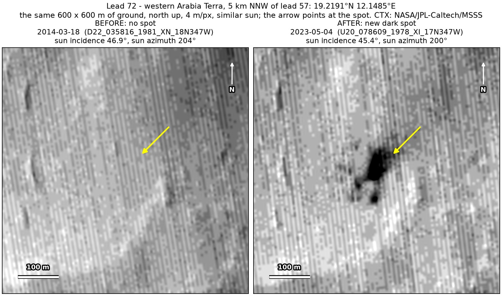
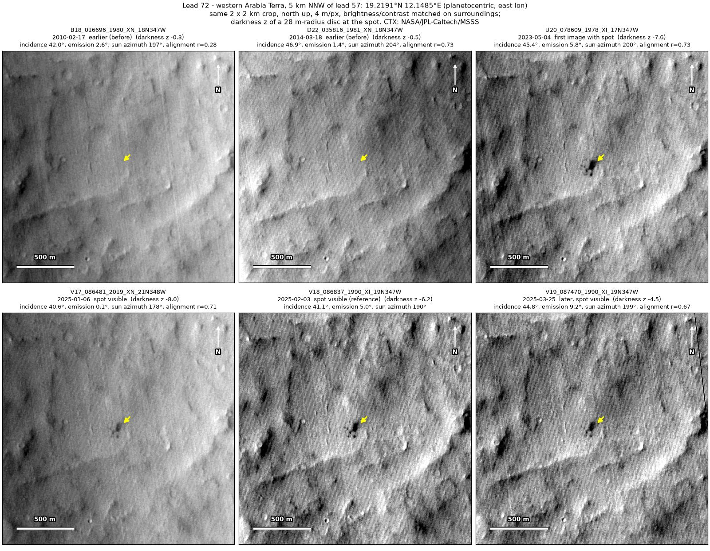
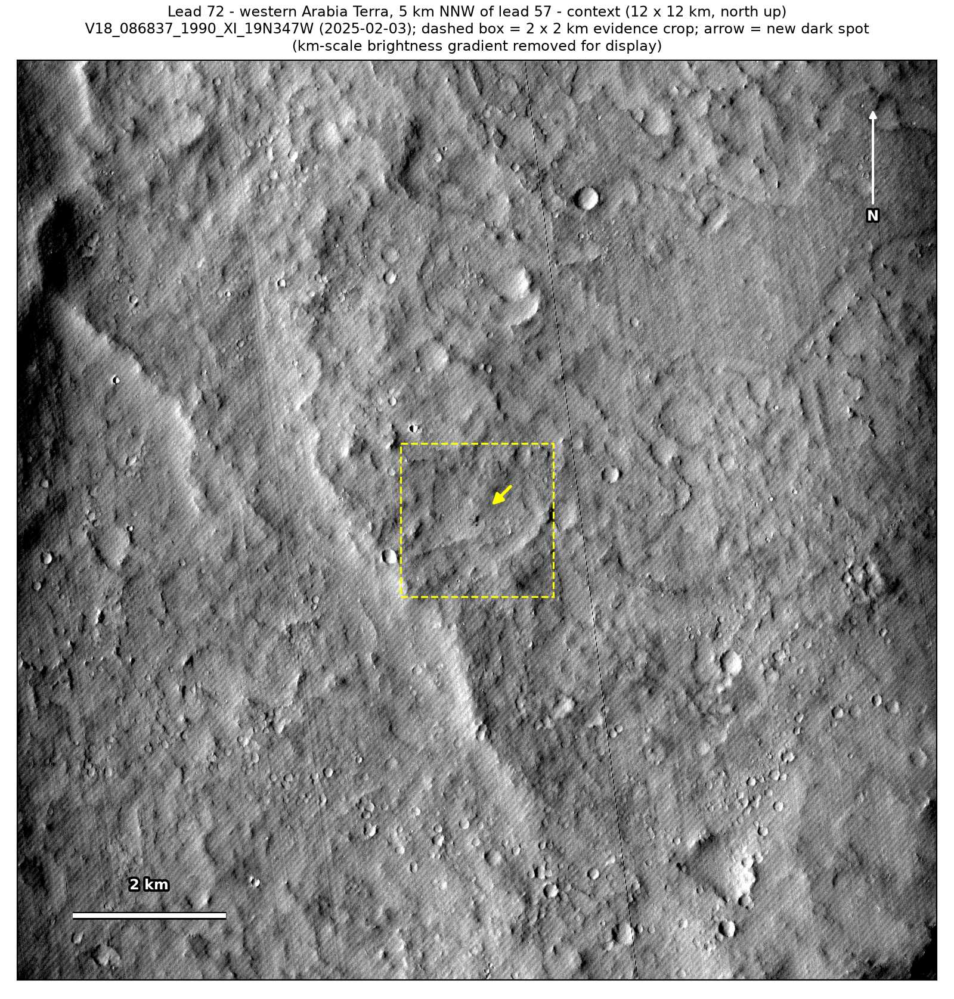
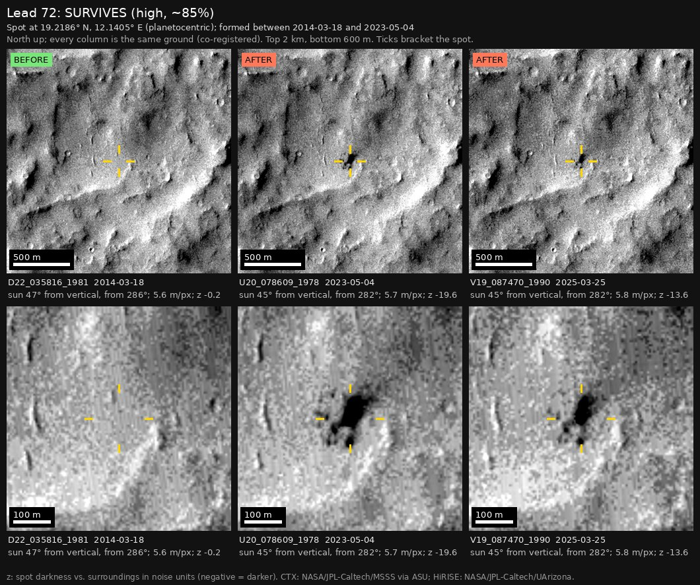

Professor of Mathematics
Paata Ivanisvili
Department of Mathematics, University of California, Irvine

← Possible new impact sites on Mars
Candidate 72: Eroded plains in western Arabia Terra, 5 km north-north-west of candidate 57
Strong · roughly 90%

What changed. An irregular cluster of dark spots about 80 × 140 m, with a main spot about 55 m across, appeared on eroded plains in western Arabia Terra between March 2014 and May 2023. It shows in four CTX images from four orbits.
Why it may be a new impact. Two earlier images, from 2010 and March 2014, show nothing there, and the 2014 one was taken under the same sun as the May 2023 image. No steep slope is visible at the spot and the dark marks are blobs, not streaks running downslope, so they are unlikely to be slope streaks, the dark streaks left by small dust avalanches. A new cluster of dark spots that has lasted two years with no track fits a small new impact.
- Location
- 19.219° N, 12.149° E
- Absent
- 17 February 2010 and 18 March 2014
- Present
- 4 May 2023, 6 January 2025, 3 February 2025 and 25 March 2025
- Size
- Main spot about 55 m across (48 × 74 m) in an irregular dark cluster about 80 × 140 m
- Confidence
- Strong candidate: roughly 90% likely to be a new impact.
- Nearby
- Candidate 57, 5.2 km to the south-south-east and covered by a HiRISE image, formed between the same two images, of March 2014 and May 2023. CTX images cannot show whether the two come from one body that broke up, although 5 km is far wider than typical impact clusters.
- Caveat
- A dark mark 300 m to the north-east would show that the two earlier images could have caught a new spot, but it is only faintly dark in them, so on its own it is weak evidence. No image from the high-resolution HiRISE camera covers it; the nearest ends 4.0 km away. Like every candidate here, it is unconfirmed: see the caveat.


